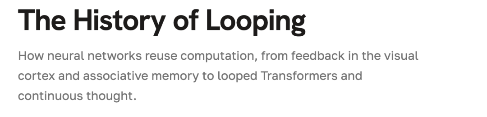
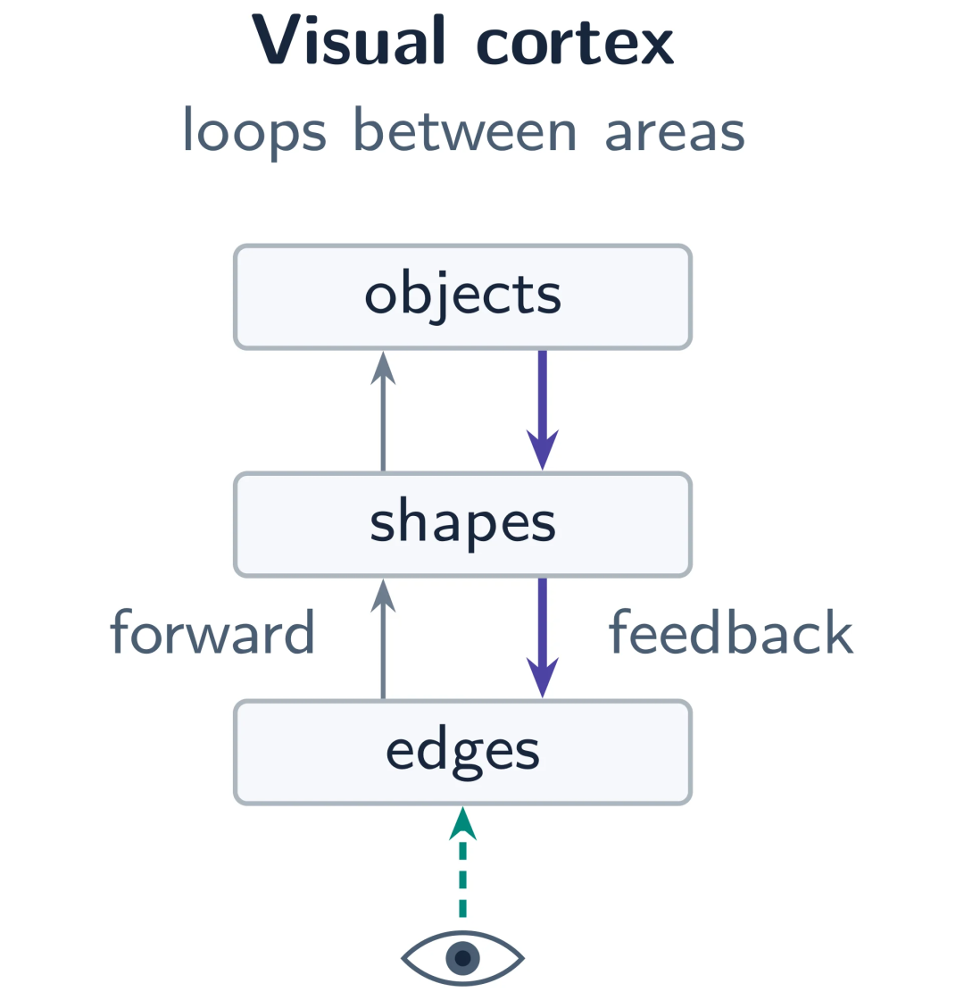
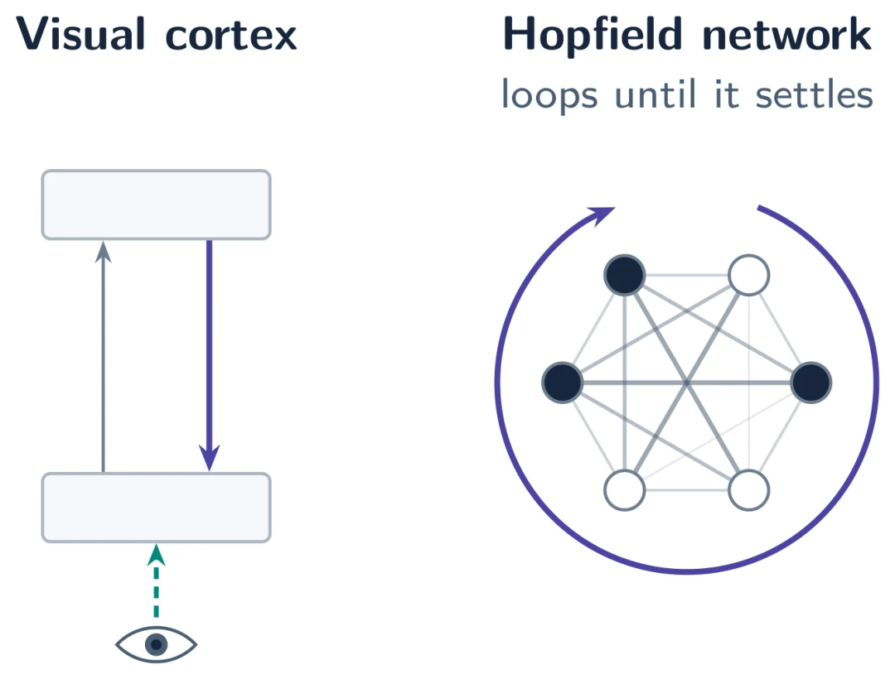
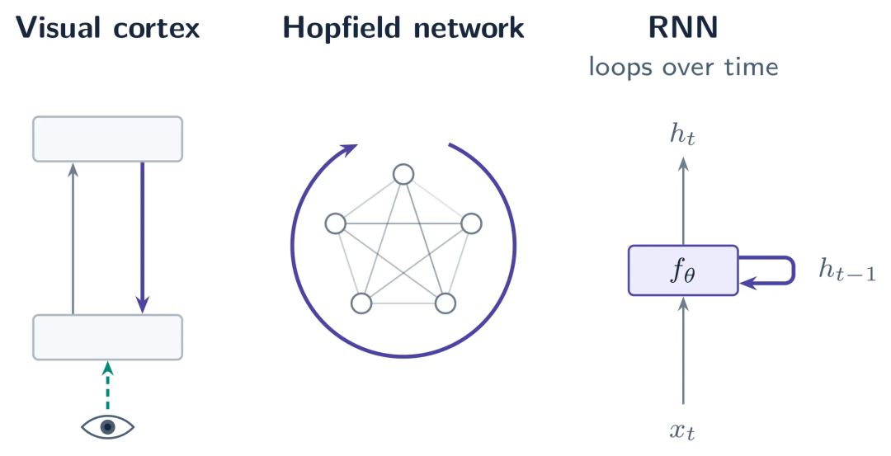
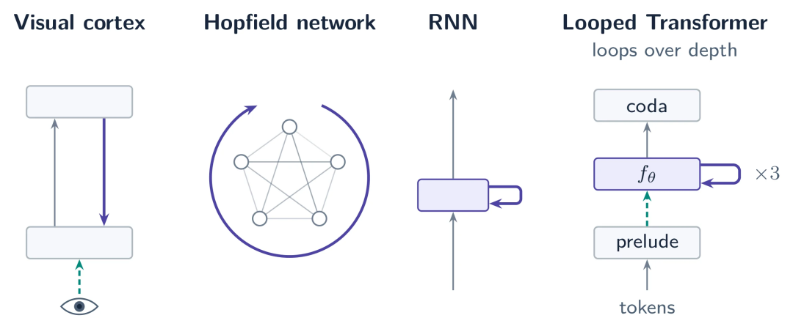
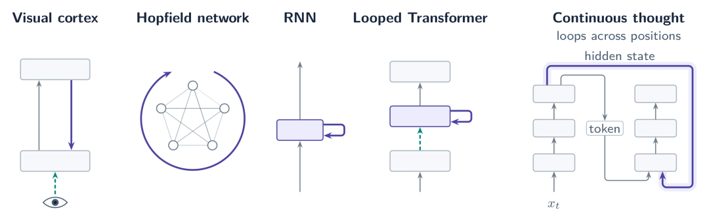

从 RNN 到循环 Transformer：跨越 80 年的循环历史
Inkling 2 Mini 和 GLM-5.4 都让循环 Transformer 再次受到关注。alphaXiv 作者 Kaden Zheng 用这篇图解指南，从神经系统中的反馈讲到 RNN、深度平衡模型和连续思维链，梳理同一组参数反复计算的来龙去脉。以下是全文翻译。

11 月 20 日，Thinking Machines Lab 发布了 Inkling 2 Mini。这是一款开放权重的混合专家模型，参数量为 26.4B，小到可以在笔记本电脑上运行。三天后，智谱发布了约 750B 参数的 GLM-5.4。引人注意的是，两者都能媲美参数量数倍于自己的模型，而这在一定程度上得益于它们共同采用的一类独特架构：循环 Transformer。
今天，我们来看看为什么循环（recurrence）会是一种强大的归纳偏置。它其实是神经计算中最古老的想法之一。简单说，循环就是把同一种计算，反复应用到自身上一次的状态上。这篇指南从大脑中的回路讲起，追溯循环的历史，讨论它什么时候应该停下来，以及增加循环能带来哪些单纯增加参数无法提供的能力。
神经系统中的反馈
先看一个有意思的例子：人的视觉系统中，也存在一种形式的循环。我们很容易把视觉想象成一条单向流水线，信号从眼睛出发，经过一系列皮层区域，每个区域提取比上一层更抽象的特征。这也是卷积神经网络的灵感来源之一。但实际情况是，前馈连接把神经活动从较早的区域传向较晚的区域，同时还有大量反馈连接反向运行，让较晚的区域改变较早区域的响应方式。这样的回路，就是大脑中的循环，而且对视觉功能至关重要。Hupé 及其同事抑制了一个较高阶的运动处理区域后，较早视觉区域中的神经元，区分物体与背景的能力就变差了。较早的区域也需要反馈，才能正常工作。

图一 视觉皮层在不同区域之间形成回路
循环也能成为记忆
1943 年，Warren McCulloch 和 Walter Pitts 用简单的开关式神经元，提出了最早的一批神经网络数学模型。他们区分了两种网络：“带环的网络”（nets with circles），以及不带环的网络。在没有环的网络里，信号只通过一次；在带环的网络里，沿着环路传播的信号，可以不断重新激发沿途的神经元，因此网络当前的状态，可以包含来自任意久远过去事件的信号。
1982 年，John Hopfield 利用这一想法构建了联想记忆，也就是今天所说的 Hopfield 网络。联想记忆会存储模式，并允许我们根据不完整的模式，回忆出完整模式。就像看到一个熟悉单词的一半，就能补出另一半。
Hopfield 网络只有一层神经元，每个神经元都与除自身之外的其他神经元相连，而且从神经元 i 到神经元 j 的权重，与从 j 到 i 的权重相同。这些权重保存着网络的记忆。要回忆一个模式，我们先把神经元设置成一个不完整模式，作为提示，然后逐个更新神经元：根据其他神经元的加权投票，决定它应该开启还是关闭，直到所有神经元都稳定下来。由于连接是对称的，每次更新都会让网络更接近一个局部能量极小值，存储的模式，也就是记忆，就位于这些位置。在局部能量极小值处，没有哪个神经元还想翻转。这里，正是反复应用更新，也就是循环本身，实现了回忆。

图二 Hopfield 网络不断循环直到稳定
有意思的是，2020 年，Ramsauer 及其同事证明，连续型现代 Hopfield 网络的一次更新，在数学上与 Transformer 使用的点积注意力机制完全相同。注意力后面还会讲到。
循环神经网络
循环神经网络（RNN）属于序列模型这一类深度神经网络。序列模型根据依次到来的输入，学习做出连续预测，通常会在输入逐个到来时，把上下文传递下去，就像句子中的单词一个接一个出现。Elman 在 1990 年提出的简单循环网络，会把自身隐藏状态的一份副本，作为下一次的输入传回自己，因此每个词都会放在前面那些词的上下文中处理。一般而言，RNN 共享的更新函数会接收当前输入 xₜ 和上一个隐藏状态 hₜ₋₁，并计算 hₜ = fθ(hₜ₋₁, xₜ)。权重 θ 在每个位置重复使用，这正是网络能够适应任意长度序列的原因。

图三 RNN 沿时间维度循环
RNN 要怎样训练呢？直观上，我们把 RNN 展开，使用随时间反向传播（BPTT）：把循环了 T 步的网络，看成一个有 T 层、各层共享权重的前馈网络。然后像普通反向传播一样，计算梯度，并让梯度沿着每一步往回传。跨度很长时，梯度会连续乘上许多步的因子，因此容易消失或爆炸。为了解决这个问题，Hochreiter 和 Schmidhuber 提出了长短期记忆模型（LSTM，1997）。它使用线性记忆单元，让内容的副本逐步原样传递，同时用学到的门，决定什么时候读取和写入这个记忆单元。
接下来，我们讨论的是沿深度方向运行的循环：同一个模块在产生输出前，会多次作用于状态 zₖ，不断改进这个状态。
什么时候停下来
不难想到，沿深度方向循环，需要一条停止规则。调整循环次数，是自适应计算的一种形式：我们希望简单输入少费点力气，困难输入多花些功夫，和大脑有些相似。最简单的办法，是固定循环次数。虽然可预测，却不符合前面的愿望。Hopfield 网络走向另一个极端，一直运行到状态稳定。
Graves 提出的自适应计算时间（Adaptive Computation Time，ACT，2016）位于两者之间：它让步数也变得可以学习。对于每个输入，循环网络执行次数可变的“思考”步骤，每一步之后都通过 sigmoid 输出一个停止概率。当这些概率累加到接近 1 时，思考结束，最终结果是中间状态按概率加权的平均值，这样整个过程就可以求导。随后，我们还会对思考步数施加一个代价惩罚，防止网络无休止地想下去。
1987 年，Pineda 展示了怎样训练处于平衡状态的循环网络。深度平衡模型（Deep Equilibrium Models，DEQ，2019）建立在这样一个想法上：很多深层序列模型的隐藏状态，会收敛到一个不动点。DEQ 直接把输出定义为这个不动点，也就是满足 z⋆ = fθ(z⋆, x) 的状态 z⋆。如果一个无限深、各层共享权重的网络能够收敛，它最终就会到达这里。因此，我们可以用数值求根算法求解 z⋆，而不必保存任何中间迭代状态。还要注意，输入 x 出现在 fθ 内部，因为每一轮迭代都会重新注入这个输入。
从循环到注意力再绕回来
循环网络有两个实际弱点。
第一，每一步都必须等待前一步完成，因此训练无法沿序列维度并行。 早期 token 中的信息，必须经过中间的每一次更新，才能影响后面的 token。
随后，Transformer（2017）去掉了这条循环。注意力机制的出现，让每个位置都可以直接读取更早的任何位置，因此序列中的两个 token，信息传递只隔着一次计算。但没有循环以后，Transformer 的层数，也就固定了每个 token 要经历多少次顺序变换，无论这个 token 有多难。
于是，我们又回到了循环。通用 Transformer（Universal Transformer，UT，2018）不沿时间计算，而是沿深度计算。UT 让同一个共享权重的注意力与前馈层模块，在所有位置上并行地反复运行，还可以使用 ACT 来自适应地决定何时停止。按照作者自己的描述，UT 把 Transformer 的并行性、全局感受野，与 RNN 的循环归纳偏置结合起来。例如，字符串复制这类任务，RNN 很容易向更长的输入外推，而 Transformer 却做不到。此外，权重共享把“学到了多少层”与“这些层用了多少次”分开，额外运行几遍，就能增加计算深度，而不增加参数。
这样的深度究竟值多少？Saunshi 及其同事（2025）发现，在加法、p 跳归纳等合成问题上，把一个 k 层 Transformer 循环 L 次，几乎可以追平一个有 kL 层、参数量为其 L 倍的模型。p 跳归纳，指的是沿着序列中的一串查找关系往下走。他们还证明，循环 T 次的模型，可以模拟 T 步思维链推理。除了“归纳偏置”这个答案之外，还有一个值得研究的开放问题：为什么在语言建模中，循环模型的困惑度，比相同深度但不共享权重的模型更差，却能在推理基准上接近、有时甚至超过标准模型？
循环语言模型
和其他架构一样，现代循环语言模型（截至 2026 年 11 月）也发展出了不同分工，尤其体现在重复哪些层。Ouro（2025）是一组参数量为 1.4B 和 2.6B、用 7.7 万亿 token 训练的模型，它从 token 嵌入开始，默认把整个层堆栈重复四遍。Huginn（2025）是一个用 8000 亿 token 训练的 3.5B 参数模型，只重复中间部分，也就是核心模块。Huginn 的架构包含前奏部分（prelude），即只运行一次、负责把 token 映射到潜空间的前面几层；随后是反复运行的核心层；最后是尾声部分（coda），即把最终状态解码为预测的后面几层。其他机制研究也发现，训练好的语言模型，最前面和最后面的几层，更多承担句法功能，中间层则更多用于推理。
更重要的区别，是输入注入。Huginn 在核心模块每次循环之前，都会把前奏部分的输出 e，与当前状态拼接，也就是 zₖ = fθ(zₖ₋₁, e)，因此核心模块每一遍都能“看见”输入。这与视觉系统相呼应：较早的视觉区域持续接收来自眼睛的输入，同时也接收来自较高区域的反馈。输入注入还有助于抑制这类循环语言模型一个已知的问题：当循环次数远远超过训练时的深度，模型可能出现“过度思考”。
跨序列位置的隐式计算
每个自回归语言模型，其实都已经包含一个“循环”：每个输出 token，都会作为下一次的输入反馈回来。思维链推理利用的正是这一点，换取超出网络深度本身所能提供的更多顺序计算。但这条循环经过的是一个很窄的通道。每一步，顶层隐藏状态都会被压缩成一个采样得到的 token，也就是词表中的一次选择，所携带的信息不到 20 比特，随后只有这个 token 从网络底部开始新的一轮。

图四 循环 Transformer 沿深度方向循环 图中重复三次
拓宽这条通道，也不是什么新想法。Feedback Transformer（2020）把过去每个位置上所有层的表示，合并为一个“记忆”向量，让每一层都能对它做注意力。因此，当前步骤哪怕是最底层，也能读取过去最高层的表示。
Coconut（Chain of Continuous Thought，连续思维链，2024）把这个想法用于推理步骤：直接把模型最后的隐藏状态，作为下一次的输入嵌入反馈回去，而不先解码成 token。值得注意的是，一次连续思考不必立刻选定唯一的下一步，因此模型可以在潜空间中开展广度优先搜索。
最近提出的全带宽 Transformer（full-bandwidth Transformer，2026），则在每个解码步骤拓宽这条通道。它通过一个门控线性单元，把上一个顶层状态与采样 token 的嵌入结合起来，让没有以文字形式传递的隐藏计算，带着新一轮深度预算，再次流经网络。在 1B 参数规模上，全带宽 Transformer 可以接近或追平使用约 1.5 倍训练 token 的标准 Transformer，而每个解码 token 增加的成本几乎可以忽略。

图五 连续思考跨越不同序列位置形成循环
放在一起看，语言模型可以在三个位置形成循环：像思维链那样，沿着自己生成的 token 循环；像循环 Transformer 那样，在单个 token 内沿深度循环；以及像 Coconut 和全带宽 Transformer 那样，让隐藏状态从前一个位置传递到后一个位置。
表一 不同模型分别在哪里循环
参考链接
原文：https://www.alphaxiv.org/guides/history-of-looping